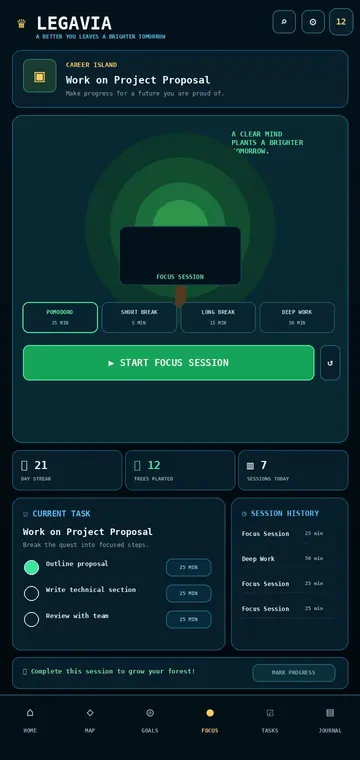

Search
Focus settings
Explorer profile
25:00
Pomodoro 25 minutes
Short Break 5 minutes
Long Break 15 minutes
Deep Work 50 minutes
Start or pause focus session
Reset timer
Open current task and choose task
Open session history
Mark current task progress after a completed focus session
Home
World Map
Goals
Focus
Tasks
Journal
FOCUS FOREST
Details
×